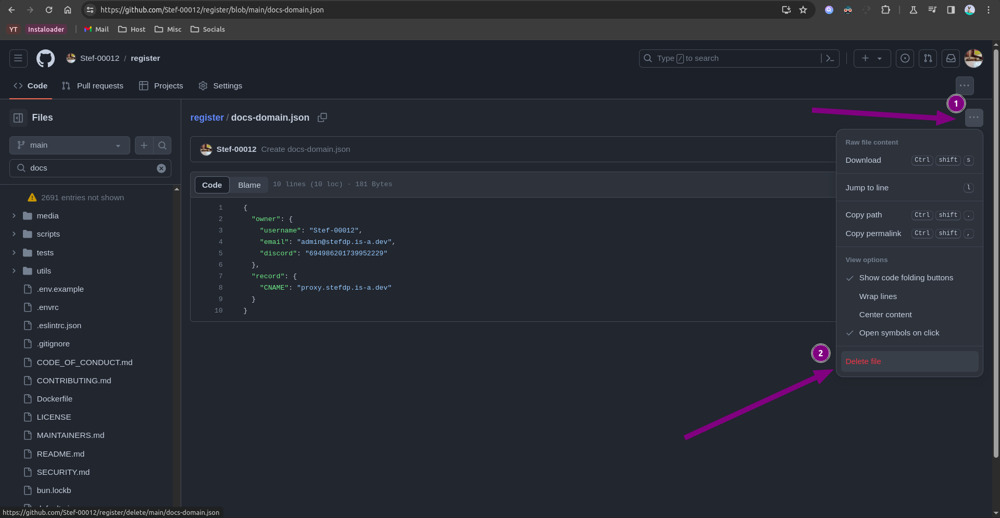
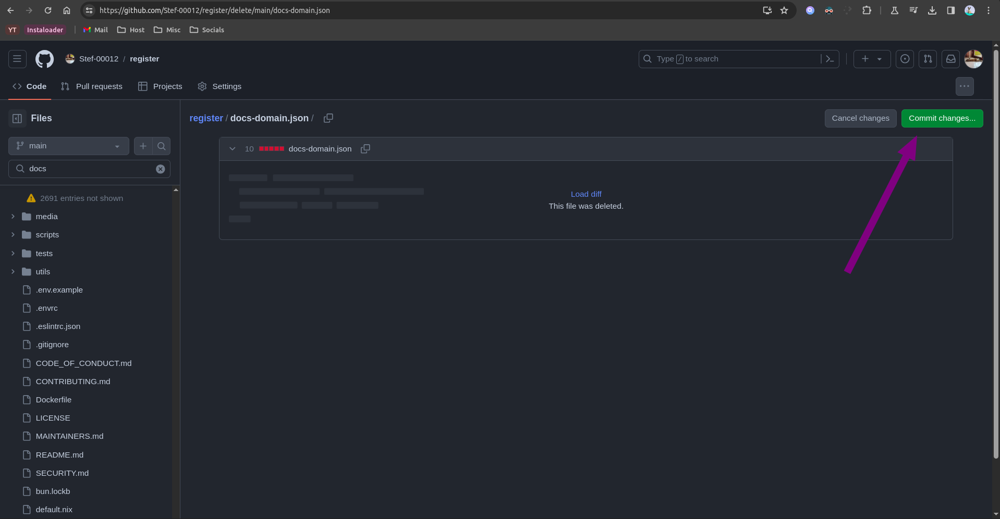
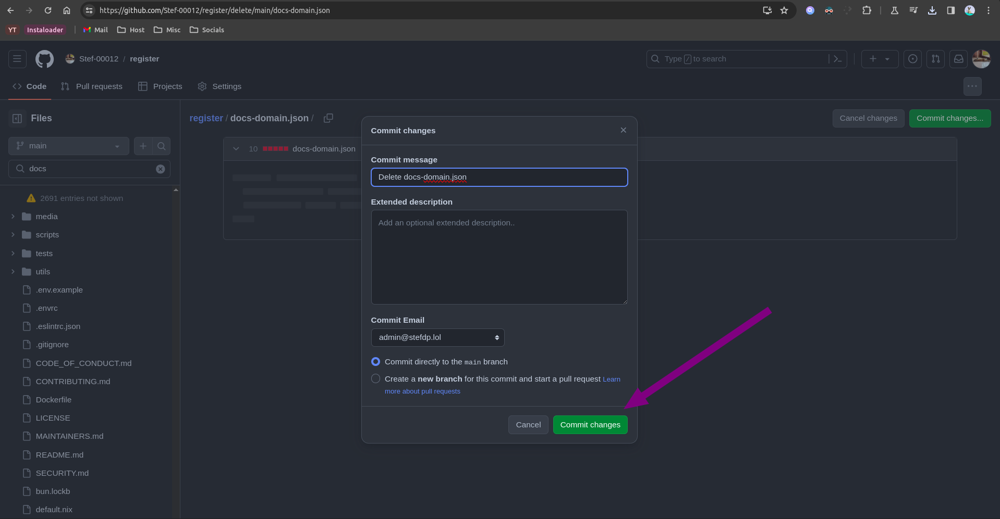
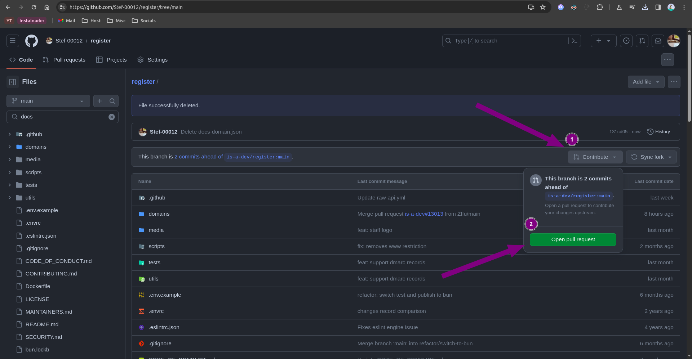
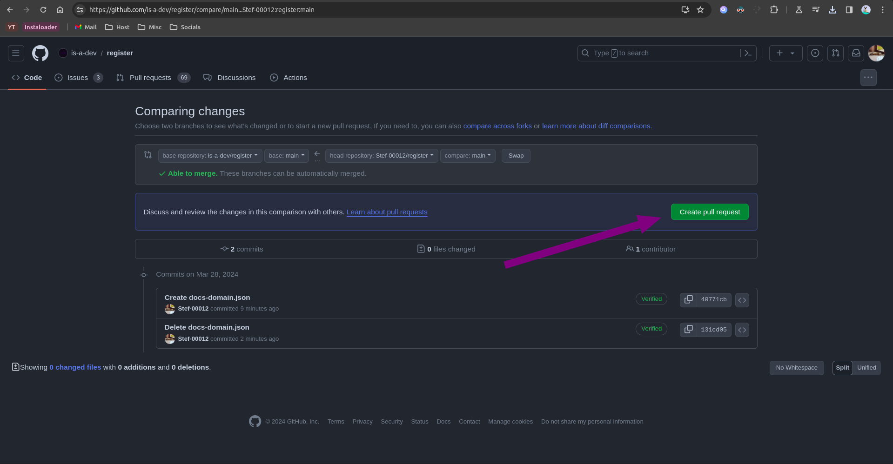

How to delete your is-a.dev domain
Open your fork of the is-a-dev/register repository
- Open your fork, or if you deleted it, fork the repository once again.
- Find your domain file in the
domains/folder (e.g./domains/myname.json) - Press the 3 dots and press the
Delete filebutton.

- Press
Commit changes.

- In the popup that appears, press
Commit changesonce again.

- Click the
Contributebutton, then pressOpen pull request.

- Press
Create pull requestagain.

And you're done! After you pull request has been merged, the domain will be deleted.